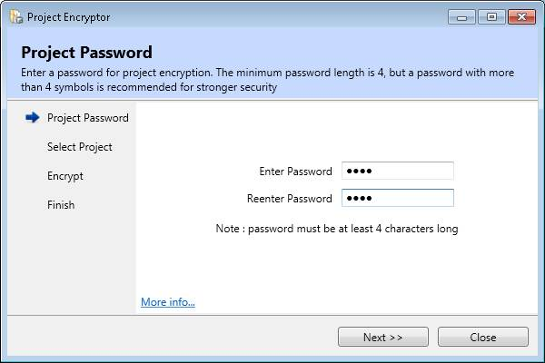
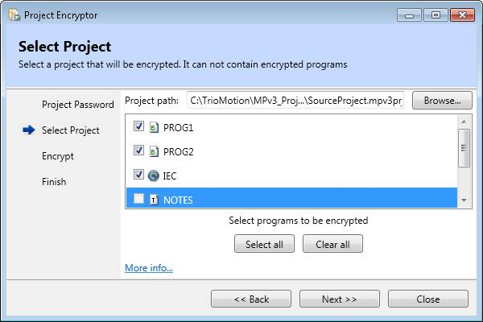
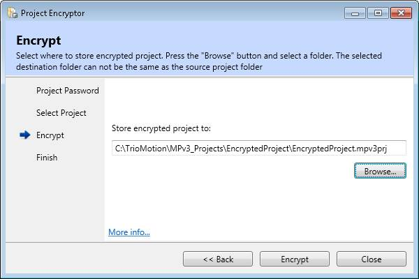
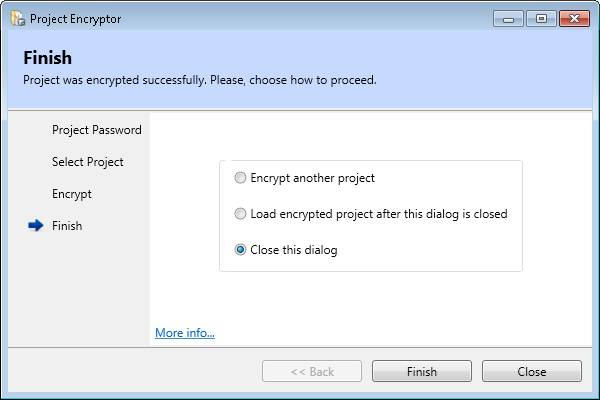

The project encryption process involves several stages as follows:
The encryption process starts with entering a project password. The password is used for encrypting the programs in a project.

The password needs to be entered twice to reduce the chance of an entry error occurring. For security reasons the password is not displayed in the applications window.
The user must select the project to be encrypted (source project).When Project Encryptor is started from within Motion Perfect, and connection mode is Sync mode, the source project is automatically set to the project that Motion Perfect is synchronized with.

The project is selected by using the "Browse" button and the standard project browse dialog.
To select which programs to encrypt tick the check boxes next to the program names
If a program is not encryptable the entry in the program list will be greyed out and it will not be possible to check it.
The destination project (which must be different from the source project) is selected by using the "Browse" button and the standard project browse dialog.

After the project has been encrypted, the wizard provides options to encrypt another project, to close the dialog and load the encrypted project inside Motion Perfect, or simply close the dialog.
